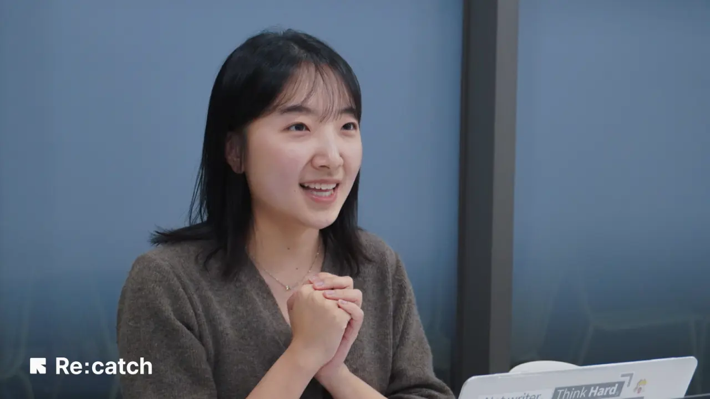

Internal Medicine
이정민
내과 · 소화기내과
증상이 어느 과인지 몰라도 괜찮습니다.
온라인 상담으로 먼저 묻고, 예약까지 한 번에.
내과·정형외과·이비인후과·소아과 전문의가 한 병원에서 협진합니다. 대기는 줄이고, 진료는 깊게.
진단부터 치료, 재활, 그리고 일상 관리까지. 흩어진 진료를 한곳에서 잇는 것이 가온병원의 방식입니다.
내과·정형외과·이비인후과·소아과가 한 병원에. 필요하면 과 사이를 이어서 봅니다.
야간·주말에도 열려 있는 응급의료센터. 갑작스러운 순간에도 곁을 지킵니다.
MRI·CT·초음파 등 정밀 장비로 원인을 정확히 찾고, 결과는 알기 쉽게 설명합니다.
앱과 웹으로 예약하고, 챗봇으로 궁금한 점을 먼저 물어보세요. 대기는 줄이고 안내는 빠르게.
각 분야의 전문의가 진단과 치료, 그 이후의 관리까지 책임집니다.
증상이 어느 과인지 헷갈릴 때는 온라인 상담으로 먼저 물어보세요. 알맞은 진료과를 안내해 드립니다.
소화기내과 · 호흡기내과
척추·관절 · 스포츠의학
비염·부비동 · 이명·난청
영유아 검진 · 소아 호흡기
증상만 입력하면 온라인 상담이 알맞은 진료과를 먼저 안내합니다. 예약까지 그대로 이어져요.
넓고 밝은 로비부터 감염관리 병동, 최신 수술실까지. 환자와 보호자의 동선을 배려해 설계했습니다.
숫자로만 보지 않습니다. 왜 아픈지 정확히 찾고, 이해할 수 있게 설명하고, 나아질 때까지 함께합니다.
충분한 검사와 협진으로 원인을 제대로 짚습니다.
어려운 의학용어는 풀어서, 선택은 환자와 함께 결정합니다.
치료 이후의 회복과 일상 관리까지 이어서 돌봅니다.
실제 진료를 받은 환자분들이 남긴 이야기입니다.

※ 후기 속 얼굴은 실제 한국인 환자 사진으로 교체될 자리입니다 (데모 화면).
병원에 오기 전에도 가온과 이어질 수 있습니다. 두 가지 방법 중 편한 것을 고르세요.
진료과·진료시간·예약 방법이 궁금할 때, 24시간 챗봇이 먼저 안내합니다. 어려운 문의는 담당 직원 상담으로 이어드립니다.
예약과 대기 현황, 진료 내역과 문진 작성까지. 내 진료를 손안에서 관리하세요.
| 평일 | 09:00 – 18:00 |
|---|---|
| 토요일 | 09:00 – 13:00 |
| 점심시간 | 13:00 – 14:00 |
| 일요일·공휴일 | 휴진 |
| 응급실 | 24시간 운영 |